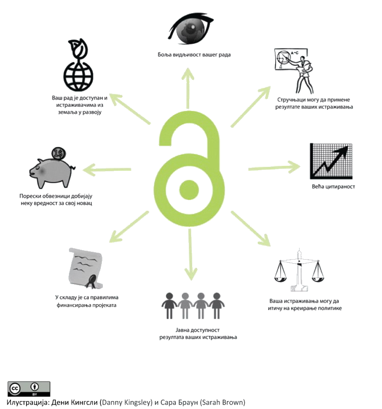

Šta je otvorena nauka?
Otvorena nauka je pokret koji ima za cilj promovisanje i ostvarivanje slobodnog pristupa naučnom znanju, podacima i rezultatima naučnih istraživanja, prvenstveno onih koji se finansiraju budžetskim sredstvima. Otvorena nauka se najčešće povezuje sa otvorenim pristupom publikacijama, ali je sam pojam mnogo širi i obuhvata veći broj principa, kao što su otvoreni podaci, otvoreno recenziranje, otvorena metodologija i otvoreni kod. Iako je ideja otvorene nauke jednostavna, primena njenih principa je složen proces koji zahteva postojanje odgovarajuće tehničke infrastrukture, zakonskih regulativa i kompetencija. Principi otvorene nauke se primenjuju na celokupan proces produkcije naučnih, ali i umetničkih rezultata, od obezbeđivanja sredstava i ispunjavanja zahteva finansijera (npr. u okviru Horizont 2020 programa) do deponovanja naučnih radova, primene rezultata istraživanja u praksi i praćenja efekata naučnog rada. Principi otvorenosti imaju za cilj da nauku učine transparentnijom, vidljivijom, efikasnijom, pravednijom i demokratičnijom.
Kome je namenjen portal?
Ukratko, svima.
ISTRAŽIVAČI i UMETNICI će biti u mogućnosti da pretražuju repozitorijume i kataloge naučne i umetničke produkcije svojih kolega, da učine svoje publikacije vidljivijim i dostupnijim, kao i da se informišu o mogućnostima objavljivanja u režimu otvorenog pristupa.
NADLEŽNI ORGANI koji definišu strategije razvoja nauke i kulture imaće povratnu informaciju o efektima ulaganja i produkciji istraživača u okviru projekata.
NASTAVNICI će biti u mogućnosti da prate razvoj nauke i primenjuju javno dostupne podatke u nastavi.
KOMPANIJE će imati mogućnost da pretražuju profile istraživača i portfolije projekata i tako lakše stupe u kontakt sa potencijalnim saradnicima iz oblasti nauke i umetnosti.
GRAĐANI će na osnovu dostupnih podataka moći da dobiju povratnu informaciju o učinkovitosti budžetskih ulaganja u nauku i da koriste literaturu koja je štampana sredstvima poreskih obveznika.
MEDIJI će moći da unaprede kvalitet i objektivnost informativnih servisa na osnovu naučnih informacija dostupnih na portalu.
Zašto otvorena nauka?
